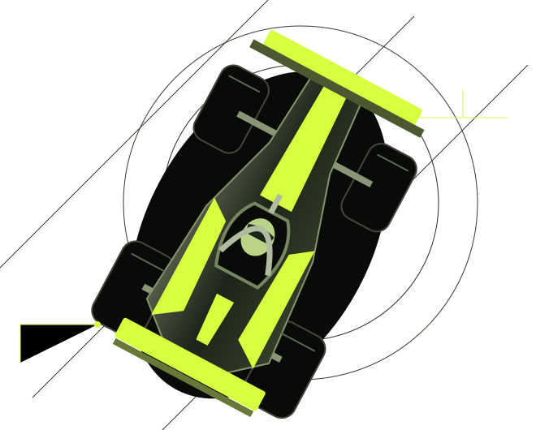

O CARRO / TEMPORADA 2027
VR–01. FEITO PARA IR ALÉM.
Cada curva começa no detalhe. Conheça o carro que transforma a ambição da Vértice em velocidade.

POTÊNCIA, LEVEZA E VELOCIDADE.

PROJETADO PARA EVOLUIR
PRECISÃO EM
CADA DETALHE.
Aerodinâmica
Asas e carroceria trabalham em conjunto para buscar estabilidade nas curvas e eficiência nas retas.
Estrutura e equilíbrio
Um conceito leve, com distribuição de massa pensada para respostas precisas aos comandos de Lucas e Maya.
Acerto de pista
Suspensão, pneus e balanço do carro são ajustados a cada circuito a partir das sensações dos pilotos.
DO BOX À PISTA
UMA TEMPORADA.
EVOLUÇÃO CONTÍNUA.
O VR–01 é a base do nosso projeto para 2027. A cada etapa, a equipe cruza os dados de pista com o relato dos pilotos para definir os próximos ajustes.
O foco está na consistência: encontrar um carro previsível nas curvas, eficiente nas retas e equilibrado ao longo da corrida.

VEJA O VR–01 EM AÇÃO.
Conheça os circuitos, os resultados e a performance dos nossos pilotos.
Acompanhar a temporadaEquipe e temporada fictícias. Especificações conceituais e imagens ilustrativas.